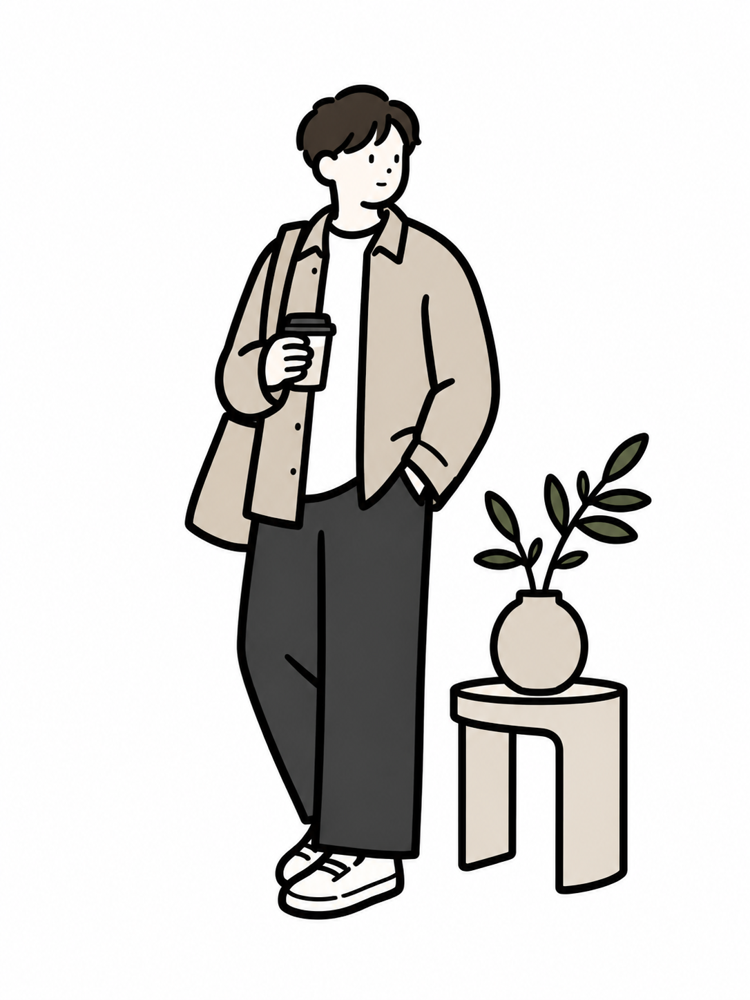

Works 作品
デザインから実装まで一貫して制作した作品です。気になる作品は、カードから詳細ページで制作プロセスをご覧いただけます。


Profile プロフィール

神﨑 勝弘かんざき まさひろ
コーディングからキャリアを始め、現在はFigmaでのデザイン制作とフロントエンド実装の両方を担当しています。「見る人に伝わるデザイン」と「意図を正確に再現するコーディング」の両立を軸に、実案件では、イベント公式サイトやコーポレートサイトなど5件を担当しました。
特にこだわっているのは、ユーザー目線での導線設計と、ブランドらしさを活かすレイアウト設計。スマートフォンでも快適に閲覧できるレスポンシブ対応や、ライブラリを用いた動的な演出にも取り組んでいます。
デザインと実装のあいだで情報が迷子にならないものづくりを心がけています。今後はWebデザイナー兼フロントエンドとして、デザインと実装の両方に関われるチームで、企業やサービスの魅力を伝えるWebサイト制作に携わりたいと考えています。
Skills スキル
-
HTML / CSS（SCSS）
- デザインカンプからのレスポンシブ実装（ピクセルパーフェクト）
- BEM設計・デザイントークン運用・コーディングルールの整備
- @layer / oklch() / カスケードレイヤー設計などモダンCSSの実践（本サイトで使用）
-
Figma
- LP・コーポレートサイトのデザイン制作
- auto-layout・コンポーネントによる再利用性の高いデータ設計
- 実装への受け渡し（ハンドオフ）を前提とした命名・余白の一貫性
-
JavaScript
- スライダー・アコーディオン・ドロワーなどのUI実装
- View Transitions・スクロール駆動アニメーション（animation-timeline）による演出（本サイトで使用）
- prefers-reduced-motionに配慮したアニメーション設計
-
WordPress / PHP
- 既存テーマのカスタマイズ
- 本サイトのブロックテーマ化（オリジナルテーマ）を実践
-
Photoshop / Illustrator
- バナー・ロゴ制作（ターゲット別の複数案提案）
- Web用画像の書き出し・軽量化（WebP対応）
-
AI活用（Claude Code）
- 実案件（津堅ハーリー・ライトディレクション）で構成から実装まで活用
- 本サイトのリニューアル・ブラッシュアップにも活用
-
サイト公開・計測設定
- レンタルサーバーへの公開（独自ドメイン・SSL・WordPress移行）
- GA4・Google Search Console の導入とサイトマップ送信
- PageSpeed Insights による表示速度改善（本サイトはデスクトップ全項目100点）
Service できること
Figmaでのデザインから、コーディング・WordPress構築・公開後の計測まで、Webサイト制作の工程を一人で通して担当できます。
-
LP・Webサイト制作
構成・ワイヤーフレームからデザイン・コーディング・公開まで一貫して担当します。1ページのランディングページから、中小規模のコーポレートサイトまで制作しています。
-
WordPressサイト構築
オリジナルテーマで構築します。このサイトもブロックテーマを自作しており、更新する人がブロックエディタで迷わず編集できる形を心がけています。
-
デザイン・素材制作
Figmaでデザインを制作します。実装への受け渡しを前提にデータを組むため、ほかのコーダーへもスムーズに引き継げます。バナー・ロゴの制作も担当しています。
-
公開後の計測・改善
GA4・Googleサーチコンソールの導入と、アクセス状況の分析に対応します。表示速度やアクセシビリティも、実測しながら改善します。
仕事の進め方
デザインと実装の両方がわかる立場から、チームの中で意図が抜け落ちないように動きます。
-
要件を言葉にする
目的とターゲットを整理し、判断の基準を文章で共有してから設計に入ります。
-
ルールを先に決める
余白・文字サイズ・色をデザイントークンとして定義し、デザインと実装で同じ物差しを使います。
-
受け渡せるデザイン
Figmaはコンポーネントと命名を整え、ほかのコーダーが開いても迷わないデータにします。
-
Gitで管理して実装
コーディング規約を文書にし、変更はGitで履歴に残します。表示速度とアクセシビリティは実測で確かめます。
-
計測して改善
公開後はGA4・Search Consoleで数字を見て、次の改善につなげます。
作品の詳しい制作過程や、得意なことについてもお話しできます。お気軽にご連絡ください。
お問い合わせAbout このサイトについて
本サイトはテンプレートを使わず、自分で整備したコーディングルール（BEM設計・デザイントークン・SCSSのコンポーネント分割）に基づいて、設計から実装まで一貫して制作しました。デザインはFigmaで組み、フロントエンドはWordPressのオリジナルブロックテーマとして実装しています。
この制作では、AI（Claude Code）を実装のパートナーとして本格的に活用しました。コードの多くはAIとの協働から生まれたもので、その事実を隠すつもりはありません。
一方で、何をどう作るかという設計判断と、品質の最終責任は自分が握り続けました。AIを「手を動かす道具」として使いこなし、@layer によるカスケード管理、oklch() によるカラートークン設計、WebPによる画像最適化といったモダンな手法を、迷いなくこのサイト自身で実践しています。AIを使いこなす力もまた、これからの制作者に必要なスキルだと考え、「どう作るか」という判断そのものを作品の一部としてご覧いただけるようにしました。
公開後の運用も自分の手で行っています。レンタルサーバーへの公開から、GA4・Google Search Console の導入とサイトマップ送信、PageSpeed Insights を用いたパフォーマンス改善（デスクトップ全項目100点）まで、「作って終わり」ではなく「届けて計測する」ところまでを本サイトで実践しています。
Built With
- HTML
- SCSS
- JavaScript
- BEM
- @layer
- oklch()
- WebP
- Figma
- Claude Code
- GA4
- Search Console